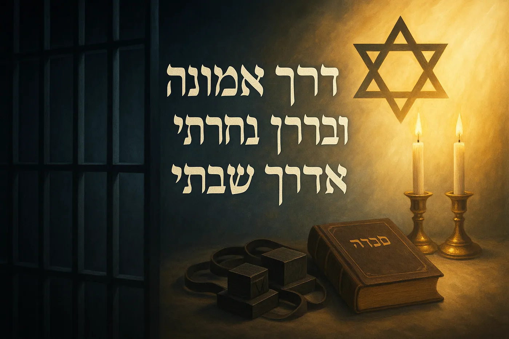

דרך אמונה: 481 ימי החוסן הרוחני של אגם ברגר
הקדמה: הלוח הלבן וההבטחה
ביום ה-30 בינואר 2025, לאחר 481 ימים של חושך ואי-ודאות בשבי חמאס, עלתה התצפיתנית אגם ברגר למסוק צה"לי. בידיה אחזה לוח מחיק לבן, ועליו, בכתב יד ברור, מסר שריגש ואיחד אומה שלמה: "בדרך אמונה בחרתי, ובדרך אמונה שבתי".1 המשפט הזה, הלקוח מספר תהילים (קי"ט, ל'), לא היה רק הצהרת תודה על הישרדותה; הוא היה תמצית סיפורה, הכרזת ניצחון של הרוח על הגוף, וחלון הצצה נדיר אל הכוח הפנימי שאפשר לנערה צעירה לשרוד את התופת.
המסר הזה לא נולד ברגע השחרור. הוא היה שם הרבה קודם. כפי שמעידים בני משפחתה, המשפט "דרך אמונה בחרתי" היה שומר המסך בטלפון הנייד שלה ומוטו שחזר בכתביה עוד לפני שנחטפה.5 ההבנה הזו משנה את נקודת המבט על סיפורה. זו אינה עדות על אמונה שנולדה מתוך הייאוש, אלא סיפור על אמונה קיימת ועמוקה שעמדה במבחן האכזרי ביותר והוכיחה את כוחה. השבי לא יצר את אמונתה של אגם; הוא חשף את עוצמתה.
דוח זה מתחקה אחר מסעה הרוחני של אגם ברגר. הוא מתעד, מאמת ומנתח את כל גילויי האמונה, הזהות היהודית והחוסן הנפשי ששימשו לה עוגן, מצפן ומקור כוח לאורך 481 ימים. זהו סיפור על האופן שבו מסורת בת אלפי שנים – שמירת שבת, חגים, תפילה וכשרות – הופכת לאסטרטגיית הישרדות אקטיבית במקום האפל ביותר עלי אדמות, וכיצד נערה אחת, בכוח אמונתה, הפכה את סיפורה האישי למגדלור של תקווה לעם שלם.
פרק 1: המנגינה שלפני הדממה
כדי להבין את מקורות החוסן שהפגינה אגם ברגר בשבי, יש לחזור אל חייה לפני ה-7 באוקטובר. דמותה של אגם, כפי שהיא מצטיירת מעדויות משפחתה וחבריה, היא של נערה בעלת עומק, רגישות ומחויבות, שארגז הכלים הרוחני שלה היה ארוז ומוכן זמן רב לפני שנלקחה אל החושך.
הכנרת: מגיל 8, חייה של אגם היו שזורים בצלילי הכינור. היא למדה במגמת מוזיקה בקמפוס קריית שרת בחולון, והנגינה הייתה חלק בלתי נפרד מזהותה.6 הכינור, הדורש משמעת, דיוק, רגישות ויכולת להפיק יופי והרמוניה, שיקף את עולמה הפנימי. לאחר שחרורה, כשביקרה בפולין, ניגנה בכינור בן 130 ששרד את השואה, ובכך חיברה את סיפורה האישי לסיפור הנצח של העם היהודי.8
המנהיגה: לפני גיוסה לצה"ל, בחרה אגם ללמוד שנה במכינה הקדם-צבאית "גל" בעכו, הפועלת בשיתוף עם ארגון "אחריי!".6 מכינה זו מתמקדת בפיתוח מנהיגות, מעורבות חברתית והעמקת הזהות הישראלית והיהודית.9 הבחירה במסלול זה מעידה על נערה שכבר הייתה בתהליך של חיפוש משמעות, פיתוח עצמי ורצון לתרום למדינה ולחברה.
המאמינה: מעל לכל, אמונה הייתה חוט השני בחייה. עוד בגיל 16, יצרה לעצמה לוח חזון ובו כתבה: "סיפור חיי אמונה".6 כאמור, שומר המסך בטלפון שלה הכריז "דרך אמונה בחרתי".5 אמה, מירב, מתארת אותה כמי שתמיד הייתה "מחוברת ליהדותה".7 אמונה זו לא הייתה חיצונית או טקסית בלבד, אלא נטועה עמוק בזהותה. ביומן שקיבלה כמתנה, כתבה שהיא מבקשת "אהבת חינם".6
הדיוקן המצטייר הוא של אישה צעירה שהגיעה לשבי לא כדף חלק, אלא כמי שכבר טיפחה בעצמה ערכים של משמעת, מנהיגות, רגישות, ומעל לכל – אמונה עמוקה ואישית. החוסן שלה לא נולד במנהרות עזה; הוא נבנה וטופח באולמות הקונצרטים, בפעילות ההתנדבותית, ובחדרי הלימוד של המכינה בעכו.
פרק 2: מקדש מעט בתוך התופת: התפילה הראשונה
שבת, שמחת תורה, כ"ב בתשרי תשפ"ד, 7 באוקטובר 2023. אגם ברגר נמצאת בבסיס נחל עוז יומיים בלבד. מתקפת הפתע של חמאס הופכת את הבסיס לשדה קרב. בתוך הכאוס, האימה והאש, כשהמחבלים פורצים אל המיגונית שבה שהתה, תגובתה האינסטינקטיבית של אגם לא הייתה זעקה או שיתוק, אלא אקט רוחני עמוק.
בעודה תחת איום מיידי על חייה, היא החלה לומר שוב ושוב את הפסוק המכונן של האמונה היהודית: "שמע ישראל ה' אלוהינו ה' אחד".8
הבחירה בתפילת "שמע ישראל" ברגעים אלו טעונה במשמעות היסטורית ותיאולוגית עצומה. זוהי הצהרת האמונה הבסיסית ביותר ביהדות, הנאמרת על ידי יהודים לאורך אלפי שנים ברגעים של סכנת חיים ועל סף המוות. זו התפילה שנאמרה על ידי רבי עקיבא בזמן שהרומאים סרקו את בשרו במסרקות של ברזל, ועל ידי מיליוני יהודים בשואה לפני עלותם על המוקד.
באמירת "שמע ישראל", אגם ברגר לא רק התפללה על חייה; היא חיברה את עצמה, במודע או שלא במודע, לשרשרת ארוכה של דורות. היא הכריזה על זהותה היהודית מול אלו שביקשו למחוק אותה. זה היה המעשה הראשון של התנגדות רוחנית, ההצהרה הראשונה על חירותה של הנפש, גם כאשר גופה עמד להילקח בשבי. בתוך התופת, היא יצרה לעצמה מקדש מעט, מרחב פנימי של אמונה שאף מחבל לא יכול היה לחדור אליו.
פרק 3: לוח שנה של הנפש: קידוש הזמן בלב התהום
אחד האתגרים הקשים ביותר בשבי הוא אובדן תחושת הזמן, המוביל להתפרקות נפשית. עבור אגם ברגר וחברותיה, ובמיוחד לירי אלבג שהייתה עמה רוב התקופה, המאבק על שמירת הזמן היהודי – קצב היממה, השבוע והשנה – היה מאבק על שמירת הזהות והשפיות. באמצעות שעון, רדיו וטלוויזיה (כשהיו זמינים), הן ניהלו רישום מדויק של התאריכים, מה שאפשר להן להפוך את הזמן הריק למסגרת של קדושה ומשמעות.15
שמירת קדושת השבת
במקום שבו כל יום נראה אותו הדבר, השבת הפכה עבור אגם לעוגן של קדושה ושוני. היא קיבלה על עצמה שמירת שבת באופן מחמיר, כפי שלא נהגה קודם לכן. היא סירבה בתוקף להדליק אש או לבשל עבור שוביה ביום השבת, והצהירה בפניהם בפשטות: "אני לא מדליקה אש בשבת".8 בנוסף, נמנעה מצפייה בטלוויזיה ולעיתים אף מהאזנה לרדיו בשבתות.16
אחד הסיפורים המדהימים ביותר, הממחיש את הדינמיקה המורכבת שנוצרה, הוא סיפור נרות השבת. אגם סיפרה כי בתקופה מסוימת, לאחר שהמחבלים שמעו ברדיו הישראלי (גלגלצ) את ההודעה על כניסת השבת, הם החלו להביא להן נרות באופן קבוע לפני כניסת השבת.16 כך, באופן פרדוקסלי, שוביה הפכו למסייעים, ולו לרגע, במצוות הדלקת נרות שבת.
פסח: חג החירות בין החומות
חג הפסח, חג החירות, קיבל משמעות מצמררת במיוחד בתנאי השבי. אגם ולירי אלבג, שהוחזקו יחד בחדר קטן וחשוך, עשו כל שביכולתן כדי לציין את החג. הן נמנעו מאכילת חמץ, למרות שהמזון היחיד שהיה זמין להן לעיתים קרובות היה פיתות.8 אגם אף ביקשה משוביה קמח תירס, והם נענו לבקשתה והביאו לה.16
שיא ההכנות היה רגע מרגש של אחווה נשית. לירי אלבג הפתיעה את אגם והכינה הגדה של פסח מאולתרת, מצוירת על דפים ממחברת. "אני זוכרת שכשראיתי את ההגדה שהכינה ממש בכיתי", סיפרה אגם.14 הן ניסו ליצור אווירה חגיגית ככל האפשר: פרשו נייר כסף על השולחן, הניחו מפיות, הכינו חרוסת מתמרים, ואף הניחו בצד החדר כיסא ריק לאליהו הנביא.14 בליל הסדר הן שמעו ברדיו על שולחן החג הריק שנערך עבורן בכיכר החטופים בתל אביב, ובכו יחד. לאחר מכן, ישבו לאכול את "לחם העוני" שלהן – פיתות מקמח תירס – ובכך קיימו את חג החירות בלב העבדות.23
צומות האומה, רעבונה של היחידה
באופן מעורר השתאות, אגם הקפידה לצום בכל הצומות המרכזיים בלוח השנה היהודי: יום כיפור, תשעה באב ותענית אסתר.8 היא עשתה זאת למרות הרעב והמחסור התמידי במזון, ולמרות חוסר הוודאות לגבי מתי תזכה לארוחה הבאה.
אחד הרגעים המכוננים ביותר במסע האמונה שלה בשבי קשור לצום תשעה באב. היא סיפרה כיצד חשה אבודה ולא ידעה מתי חל הצום. היא פנתה בתפילה אישית: "ביקשתי מאלוהים שיביא לי רמז". זמן קצר לאחר מכן, במקרה, הופיע על מסך הטלוויזיה התאריך העברי "ב' באב". אותו סימן אקראי לכאורה, הפך עבורה להתערבות של ההשגחה העליונה. היא ספרה את הימים עד לתשעה באב וקיימה את הצום.16 רגע זה מהווה אבן יסוד בעדותה על הקשר האישי והחי עם אלוהים, גם במעמקי התהום.
כדי להמחיש את ההיקף והשיטתיות של שמירת המצוות, הטבלה הבאה מרכזת את גילויי האמונה המרכזיים של אגם ברגר בשבי:
טבלה 1: כרוניקה של שמירת מצוות בשבי
מצווה/טקס | אופן הקיום | אנקדוטה וציטוט מרכזי | מקורות |
שבת | סירוב להדליק אש, לבשל או לצפות בטלוויזיה. | "פשוט לא הסכמתי להדליק אש בשבת". השובים הביאו נרות לאחר ששמעו את כניסת השבת ברדיו גלגלצ. | 8 |
פסח | הימנעות מחמץ. אכילת פיתה מקמח תירס. | "סירבתי לאכול לחם חמץ... ביקשתי מהם קמח תירס". לירי אלבג הכינה הגדה מאולתרת שגרמה לאגם לבכות. | 8 |
כשרות | סירוב לאכול בשר לא כשר. | "לא אכלתי בשר מטעמי כשרות". אכלה בשר רק לאחר 14 חודשים כשהייתה בסכנת חיים, מתוך עיקרון של פיקוח נפש. | 1 |
יום כיפור | צום ותפילה מרובה. | "הצלחנו לצום, ואני זוכרת שהתפללתי המון באותו יום". ביקשה מהשובים לברר עבורה את תאריך הצום. | 8 |
תשעה באב | צום. | "ביקשתי מאלוהים שיביא לי סימן, ואז במקרה ראיתי בטלוויזיה את התאריך 'ב' באב'". | 1 |
תפילה יומיומית | שימוש מתמיד בסידור תפילה. | התפללה לאלוהים שישלח לה סידור. שובה שלעג לה בתחילה, הביא לה אחד יומיים לאחר מכן ואמר: "אלוהים שלך אוהב אותך". | 15 |
פרק 4: עוגנים של רוח: סיפורו של הסידור
מבין כל סמלי האמונה והחוסן, סיפורו של סידור התפילה שהגיע לידי אגם בשבי הוא אולי העוצמתי והמרגש מכולם. הוא הפך עבורה ל"עוגן רוחני" 19 ולסמל מוחשי של קשר ותקווה.
ישנן שתי גרסאות, המשלימות זו את זו, לאופן הגעתו של הסידור. לפי גרסה אחת, בינואר 2024, המחבלים מצאו חפצים שהשאיר צה"ל בשטח, ביניהם סידורים, ופשוט הביאו אותם לחטופות.17 אגם מתארת זאת: "הם הראו לנו את זה ואמרו 'קחו'. השתמשנו בזה המון, זה נתן לנו כוח".27
הגרסה השנייה, אישית ומטלטלת יותר, מגיעה מעדותה של אגם עצמה. היא מספרת כיצד התפללה מעומק ליבה לקבל סידור. היא אף פנתה לאחד משוביה ושאלה אם יש לו ספר תפילות יהודי. המחבל צחק בפניה. אגם לא ויתרה והמשיכה להתפלל. יומיים לאחר מכן, אותו מחבל חזר אליה עם סידור תפילה מסוג "רינת ישראל" ואמר לה את המילים הבלתי נתפסות: "אלוהים שלך אוהב אותך. מצאנו את זה בחאן יונס".22 בין אם מדובר בצירוף מקרים או בהשגחה פרטית, עבור אגם, היה זה נס גלוי. היא הרגישה שהסידור "הגיע בדיוק כשהיינו צריכות אותו יותר מכל".15
הסידור לא היה רק חפץ. הוא היה חבל הצלה. הוא איפשר לה ו לחברותיה להתפלל באופן סדור, לשאוב כוח ממילים בנות אלפי שנים, ולהרגיש מחוברות לעם שלם ולמסורת עתיקה. כאות של כבוד עמוק לחפץ הקדוש, אגם אף יצרה עבורו כיסוי מגן מרגל של מכנסיים בלויים 7 – מעשה סמלי המדגים כיצד השתמשה בחומרי השבי והשבר כדי להגן על קודשי הרוח.
פרק 5: דיאלוגים בתהום: אמונה מול שוביה
היחסים בין אגם לשוביה היו מורכבים וטעונים, וחשפו דינמיקה פסיכולוגית ותיאולוגית מפתיעה. מצד אחד, היא עמדה תחת לחץ מתמיד לוותר על זהותה. שוביה ניסו לכפות עליה להתאסלם, הלבישו אותה בחיג'אב ודרשו ממנה לקרוא בקוראן.13 אגם סירבה לכך בתוקף ובאופן קטגורי, במה שהיווה אקט מרכזי של התנגדות רוחנית.19
מצד שני, ובאופן פרדוקסלי, דבקותה הדתית עוררה אצלם סוג של כבוד מעוות. היא העידה: "הם אמרו שכל היהדות היא שקר, אבל הם מעדיפים מישהו מאמין באלוהים מאשר מישהו שלא מאמין".17 במקום אחר הוסיפה:
"באיזשהו מקום העריכו אותי יותר כי אני דתייה".15
נראה כי אמונתה של אגם יצרה מסגרת שהייתה, באופן מוזר, מובנת לשוביה יותר מאשר חילוניות. עבורם, העולם מתחלק למאמינים וכופרים. מאמינה בדת אחרת, גם אם היא "שקרית" בעיניהם, עדיין פועלת במישור קיומי שהם מזהים. לעומת זאת, אדם חילוני או אתאיסט הוא אנומליה, ריק שקשה להם להכיל.
כך, מעשיה של אגם – הצומות, התפילות, שמירת השבת – היו חלק מ"שפה" דתית שהם יכלו להבין, גם אם התנגדו לה. דבקותה העיקשת בדתה שידרה עוצמה ועקרונות באופן שחצה את חומות האיבה. הדבר הוביל לרגעים הסוריאליסטיים שבהם אותם מחבלים שהחזיקו בה בשבי, סיפקו לה נרות שבת, קמח תירס לפסח, ואף את סידור התפילה שהיה לה למשענת. אמונתה הפכה, ללא כוונה, לשפה משותפת בלתי-מדוברת, שיצרה סדקים של אנושיות מעוותת בתוך מציאות לא-אנושית.
פרק 6: נדר של אם: המסע המקביל של מירב ברגר
בזמן שאגם ניהלה את מאבקה הרוחני בתוך עזה, ניהלה אמה, מירב, מסע אמונה מקביל ורב עוצמה מחוץ לחומות השבי. סיפורה של מירב אינו רק סיפור של אם דואבת, אלא של אישה שמצאה באמונה כוח לא רק לעצמה, אלא גם כדי לבנות גשר רוחני אל בתה השבויה.
מסעה הרוחני של מירב החל עוד לפני ה-7 באוקטובר, לאחר פטירת אמה, אך התעצם לאין שיעור במהלך 481 ימי השבי.7 היא החלה לשמור שבת ולהעמיק בלימוד תורה, וראתה בכך דרך להתחבר לאגם. "רק עכשיו התחלתי ללמוד, ופרשת השבוע נותנת לי עוגן כזה, מצפן כזה", סיפרה.5 היא לא הסתפקה בחיזוק אישי, אלא פעלה גם במישור הציבורי. היא יזמה קריאה לנשות ישראל להתפלל לשלום אגם בעת הטבילה במקווה 5, ובאקט מרגש ויוצא דופן, פנתה לכלי התקשורת וביקשה מהם לכבד את השבת ולהימנע מסיקור שחרור בתה אם יתרחש בשבת, מתוך כבוד לאמונתה של אגם.25
הרגע המכונן עבור מירב היה כאשר שמעה מעדויות של חטופות ששוחררו קודם לכן, על כך שאגם שומרת מצוות בשבי.38 האישור הזה יצר לולאת היזון חוזר של אמונה בין אם לבת, שהיו מופרדות פיזית אך מאוחדות ברוחן. מירב, שבאה מבית מסורתי, הביעה את התפעלותה העצומה מכוחה של בתה, שגדלה בבית חילוני:
"אני, כאישה חרדית מדורות של שמירת מצוות, לא יודעת אם הייתה לי אמונה חזקה כל כך במצב כזה".19
בכל הופעותיה הציבוריות, קראה מירב להתחזקות בזהות היהודית. "אגם נחטפה כי היא יהודייה – תהיו יותר יהודים!" אמרה לחברי משלחת מחו"ל.19 היא הפכה את המאבק האישי שלה למסר לאומי, והדגימה כיצד אמונה יכולה להעניק משמעות וכוח גם מול הסבל הגדול ביותר.
מסקנות: תהודתו של אור אחד
סיפורה של אגם ברגר אינו מסתיים עם שחרורה. הוא מהדהד וממשיך להדהד בלבבות רבים בישראל ובעולם היהודי. הוא הפך למשל מודרני על כוחה של התנגדות רוחנית ועל יכולתה של האמונה להעניק חוסן נפשי בתנאים הקיצוניים ביותר.
הניתוח המעמיק של עדויותיה ועדויות הסובבים אותה מוביל למסקנה חד-משמעית: דבקותה של אגם בזהותה היהודית לא הייתה רק נחמה פסיבית, אלא עמוד השדרה של הישרדותה. היא השתמשה במצוות ובטקסים כדי לבנות סדר בתוך הכאוס, להעניק קדושה לזמן החולין, ולשמר את צלם האדם שלה מול ניסיונות הדה-הומניזציה של שוביה. כפי שניסחו זאת מומחים לבריאות הנפש, "אמונה מחזירה לאדם עוגן פנימי של שליטה ותקווה ולעיתים אפילו משמעות... היא מייצרת חוסן פנימי שאין לשובים ולמחבלים שליטה עליו".39
עם שובה, אגם לא התמקדה בטראומה, אלא במסר של אחדות ותקווה. היא חזרה וקראה לשמירה על האחדות בעם, וקישרה זאת ישירות לתפיסת החוזק של ישראל בעיני אויביה: "הם אמרו לנו שכשאנחנו מאוחדים, אנחנו חזקים. בואו נשמור על האחדות והכוח שלנו כעם ישראל".19
בעידן של ציניות וספקנות, סיפורה של אגם ברגר מציע עדות חיה ונוגעת ללב לכך שמסורות עתיקות ואמונה אישית עמוקה אינן נחלת העבר. הן יכולות להוות מקור כוח ממשי, מגן לנפש, ומצפן המאפשר לאדם למצוא את דרכו גם בחושך המוחלט. סיפורה של נערה אחת, שבחרה בדרך האמונה, הפך לסיפור של עם שלם, המגלה מחדש את עוצמתה של הרוח.
נספח: מקורות וקישורים
להלן רשימה מפורטת של המקורות ששימשו בסיס לדוח זה, כולל קישורים ישירים למאמרים, סרטונים ותמלילים, על מנת להבטיח שקיפות מלאה ואפשרות אימות של המידע.
כתבות וראיונות מרכזיים:
Mako (N12), ירון אברהם, "העריכו אותי יותר כי אני דתייה": העדות המצמררת של אגם ברגר משבי חמאס, 20.02.25: https://www.mako.co.il/news-military/2025_q1/Article-ce364e5efaf1591026.htm (מקור מרכזי לעדויות על שמירת שבת, חגים, קבלת הסידור, והיחס הפרדוקסלי של המחבלים).
Ynetnews, "Agam Berger: 'I chose the path of faith'", 11.04.25: https://www.ynetnews.com/article/bjz0hlk11xl (מאמר דעה של אגם ברגר, כולל פרטים על תפילת "שמע ישראל" והסירוב לבשל בשבת).
The Times of Israel, "Ex-hostage recalls Passover in Gaza...", 11.04.25: https://www.timesofisrael.com/ex-hostage-recalls-passover-in-gaza-says-remaining-captives-in-chains-during-holiday/ (מאמר דעה נוסף של אגם, עם פירוט על סדר הפסח המאולתר והלחץ להתאסלם).
מעריב, "ביקשתי מאלוהים רמז": העדות המצמררת של אגם ברגר מהשבי, 19.02.25: https://www.maariv.co.il/news/military/article-1174299 (מקור לסיפור על קבלת הסימן לתשעה באב וסיפור הנרות מגלגלצ).
ynet, שילֹה פריד, "כשראיתי בשבי את ההגדה שלירי הכינה - ממש בכיתי", 08.04.25: https://www.ynet.co.il/judaism/article/hywra2g01l (ראיון מפורט על חגיגת פסח בשבי, כולל סיפור ההגדה המצוירת).
ALL ISRAEL NEWS, "'I have chosen the path of faith'...", 19.02.25: https://allisrael.com/i-have-chosen-the-path-of-faith-agam-berger-shares-how-god-got-her-through-482-days-of-captivity-in-gaza (מקור מרכזי לציטוטים של מירב ברגר, סיפור הסירוב לקוראן והמסר על האחדות).
Mizrachi World Movement, "A Mother's Faith: An Interview with Meirav Berger", 2025: https://mizrachi.org/hamizrachi/a-mothers-faith-an-interview-with-meirav-berger/ (ראיון עומק עם האם מירב, המספק הקשר על המסע הרוחני שלה ושל אגם).
Aish.com, "Courage in Captivity: Agam Berger's Faith in Gaza", 09.02.25: https://aish.com/courage-in-captivity-agam-bergers-faith-in-gaza/ (מקור לסיפור המפורט על תפילתה של אגם לקבלת סידור והתגובה של המחבל).
The Jerusalem Post, "Agam Berger recounts her she kept her faith in captivity", 20.02.25: https://www.jpost.com/israel-news/article-842933 (אישור נוסף על יחס המחבלים והערכתם לדת).
כיכר השבת, "מצאה סידור בעזה... וסירבה לגעת בקוראן", 02.02.25: https://www.hidabroot.org/article/1205959 (דיווח על ביקור הרבנית דרעי ופרטים על הסידור והסירוב לקוראן).
קול ברמה, "הסיפור המרגש של אגם ברגר", 23.02.25:(https://kol-barama.co.il/item/%D7%94%D7%A1%D7%99%D7%A4%D7%95%D7%A8-%D7%94%D7%9E%D7%A8%D7%92%D7%A9-%D7%A9%D7%9C-%D7%90%D7%92%D7%9D-%D7%91%D7%A8%D7%92%D7%A8-%D7%94%D7%90%D7%9E%D7%95%D7%A0%D7%94-%D7%95%D7%94%D7%9E%D7%A6%D7%95/) (דיווח על שיחה עם ארגון "קשר יהודי" על כוחו של הסידור).
אתרים רשמיים ומידע רקע:
אתר משפחת ברגר, "אגם ברגר": https://www.agamberger.com/ (מקור למידע ביוגרפי, הרקע במכינה, והמוטו "סיפור חיי אמונה").
מועצת המכינות הקדם צבאיות, "מכינת גל": https://mechinot.org.il/mechina/list/general/gal (מידע על המכינה בה למדה אגם).
סרטונים וראיונות מצולמים:
ערוץ 7, "שלומי ברגר אביה של אגם מספר על סידור התפילה בשבי", 13.02.25:(https://www.youtube.com/watch?v=v8g-NYZBhdg) (עדות האב על התפילות ושמירת השבת).
ערוץ 14, "בדרך אמונה בחרתי ובדרך אמונה שבתי", 30.01.25:(https://www.youtube.com/watch?v=9O6Rt0v7MNc) (צילום המסר המרגש מהמסוק).